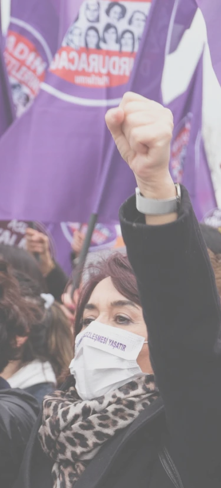
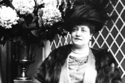

W.E FIGHT
Our fight
Our story
Apprenez l’histoire du féminisme créée et racontée par les femmes

Le combat des femmes
Marguerite Durand Journaliste féministe
Féministe du passé
Découvrez l’histoire de la première féministe journaliste française. De son enfance jusqu’à sa carrière de journaliste.
Voir plusLes Suffragettes le combat qui changea tout

Mouvement féministe du passé
Immergez vous dans l’histoire des « Suffragettes », des femmes qui se battent pour obtenir le droit de vote en Angleterre. Reconnues comme l’un des mouvements féministes les plus violents de l’histoire pour leurs actions, les « Suffragettes » en ont marre d’être ignorées.
Voir plusOprah Winfrey Icone mondiale
Féministe du présent
Découvrez l’histoire d’Oprah Winfrey, l’icône mondiale du féminisme qui à fait rayonner le mouvement féministe et le monde avec sa détermination et sa soif de vaincre l’injustice.
Voir plus